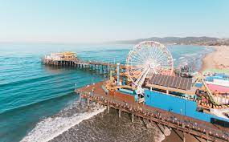
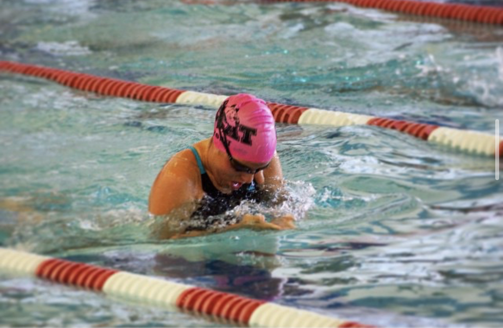

About Me
I'm 20 years old, and I'm from Los Angeles, California. I grew up in the subarbs of the San Fernando Valley, but I recently moved to Santa Monica, closer to the beach.
In my free time, I love to go to the Beach, and swim! In High School, I was on the swim team, and was a breastsroker. I was also the captain of my high school water polo team!
Growing up, I spent my summers at Camp Ramah in California, which is a Jewish sleepaway camp in Ojai, California. After High School, I worked there for a couple of summers, where I was both a counselor and a lifeguard.